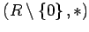

Inhalt Index DeskTop Bronstein

 Algebra und Diskrete Mathematik Klassische algebraische Strukturen Ringe und Körper Definitionen von Ringen und Körpern
Algebra und Diskrete Mathematik Klassische algebraische Strukturen Ringe und Körper Definitionen von Ringen und Körpern


Ein Ring wird Körper genannt, wenn  eine ABELsche Gruppe ist. Deshalb ist jeder Körper speziell ein kommutativer Ring mit Einselement.